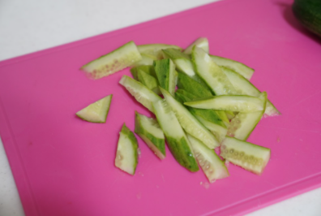
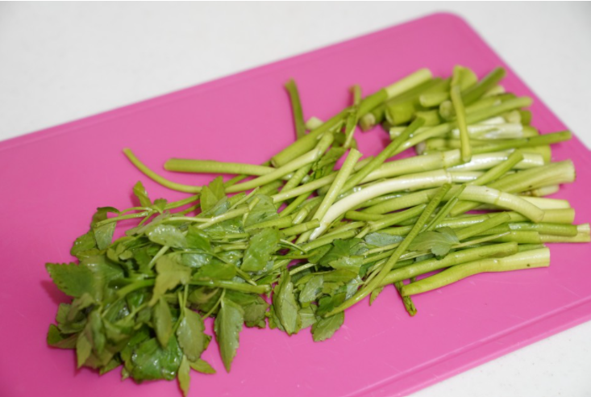
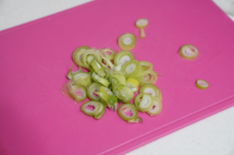
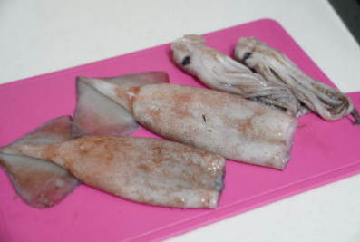
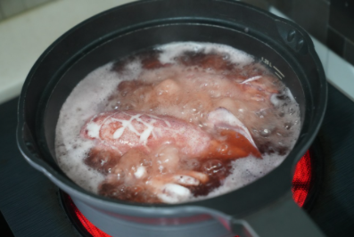
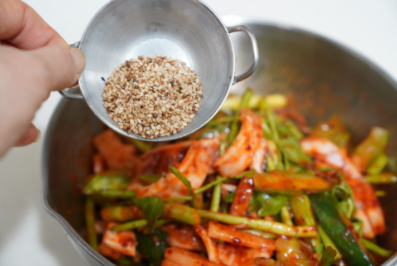

Korea Food
재료 리스트
오징어 한마리 | 미나리 한줌 | 무 1토막 | 오이 1/2개 | 통깨 약간 | 설탕 1큰슬 | 굵은 소금 1큰술 | 고추장 1/3큰술 | 고춧가루 1큰술
오징어 미나리 초무침 양념
고춧가루 1큰술 | 고추장 1큰술 | 생강즙 1작은술 | 물엿 2큰술 | 다진파 반 스푼 | 다진 마늘 반 스푼
레시피
1. 오이 절이기
오이를 길게 1/4크기의 세로로 어슷 썰고 소금과 성탕 각 1큰술씩 넣어서 절여주세요.
오이가 휘어질 정도로 절여지면 찬물에 헹구고 면포에 싸서 물기를 제거해주세요.
 
2. 채소 손질
미나리는 5cm정도 길이로 자르고 무는 얇게 썰어주세요.
대파는 쏭쏭 썰어 미리 만들어 둔 무침양념장에 넣어주세요.
 
3. 오징어 손질
오징어는 몸통과 다리를 분리한뒤 안쪽에 칼집을 내어 먹기 좋은 크기로 썬 다음 끓는 물에 살짝 데쳐주세요.
데친 후 찬물에 헹구고 체를 받쳐 물기를 제거해주세요.

4. 양념 버무리기
손질한 재료들을 만들어 둔 무침 양념장과 함께 골고루 버무린 다음 통깨를 뿌려 그릇에 소복하게 담아 준다.

오징어 미나리 무침 완성!!